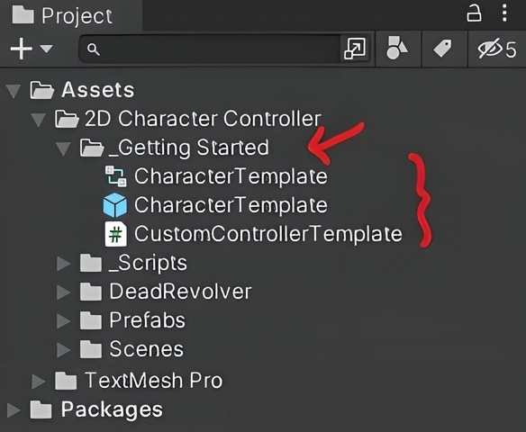
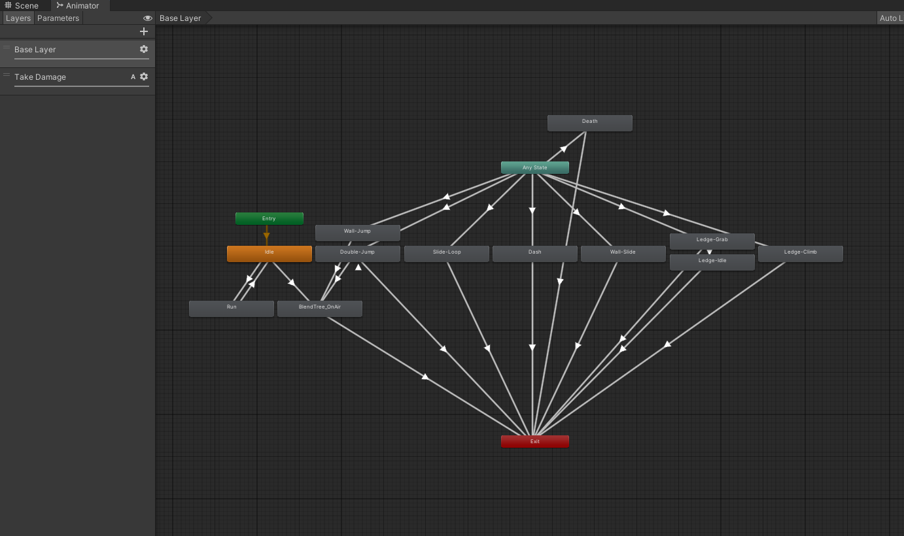

Locate Starter Files:
To get started, navigate to the 'Getting Started' folder within your project files which it can be found in Assets -> 2D Character Controller -> _Getting Started.
The resources provided are designed to expedite the setup process and provide a solid foundation for incorporating the asset into your project.

Animator Controller:
This animator controller is pre-configured to seamlessly integrate with the created systems. Simply reference your desired animations to each state.
Important: It's recommended not to remove any existing states, as it may result in unexpected behaviour. If you don't intend to use a specific state or lack
an animation for it, simply leave the animation reference empty.

CharacterTemplate Prefab:
The prefab includes all necessary components for your character to utilize the provided mechanics within the asset and serves as a base character setup.
Default values are set for characters that are approximately 1.64 Unity units tall and 0.72 Unity units wide.
Important: Avoid deleting or moving any child objects within the prefab to prevent potential bugs and/or errors.
CustomControllerTemplate Script:
This script establishes key functionality for creating your custom controller.
For your convenience, refrain from modifying the script directly. Instead, copy and paste the template code into a new script, allowing you to customize it
according to your preferences.